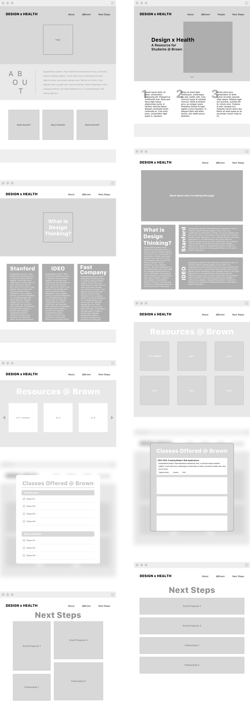
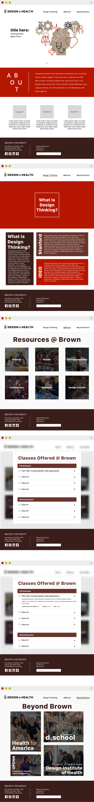

Background:
As an aspiring designer who was once a pre-med, I was curious about the opportunities available at Brown in applying design to the healthcare industry. Through my numerous emails back and forth between various professors, I had the opportunity to research more about this space with Professor Celinda Kofron within the biomedical engineering department. This year long independent study consisted of two parts: I spent the first semester researching how design is being applied to the healthcare industry (if you're really curious, the 19-page document can be found here). This semester, I am taking this information and applying the skills I learned in my web apps class to building this website.
Problem:
There are many design opportunities available to students at Brown but there seems to be a lack of knowledge and a central compilation of all this information.
Solution:
Create a website and organize all the available information in a way so that future students interested in design opportunities at Brown could easily find resources.
Low-Fidelity Mockups 1&2:
Because this website is a very informational website, it was important to think through the layout of the information is a way that was both visually appealing yet practical. I decided to incorporate a magazine style layout that would mimic the experience of someone browsing for information. Both of the mockups required a lot of experimentation in regards to how I wanted to relay the information to the user. I wanted to step away from more of an academic website to one that had more design aspects in information hierarchy, interaction, and user experience.

High-Fidelity Mockup:
Because of the academic purpose of the website and the level of professionalism, I chose to keep the website extremely simple and have the color palette similar to a variety of the other brown.edu pages. However, I still wanted to incorporate trends currently present in the design industry today by including graphics that showed the union of design thinking and the healthcare industry. I chose to go along the minimalist page layout so the user was not overloaded with a bunch of information and visual stimulation (this is evident on my ‘classes @ brown’ page by also making it more interactive than just a list of classes). Additionally, including images on all of the divs that call links/pop-ups on-click also stays consistent with Brown’s overarching visual design where they incorporate images of student life. One thing I incorporated from my critics is the standardization of my pop ups’ corners - from round to straight edge. I decided to go with unrounded corners because the panels visually looked the most uniform like a puzzle in the ‘design thinking’ page and ‘beyond Brown’ page.
I really wanted to prioritize all the information I am putting on the website in a way that would not be overwhelming to the user. So putting things is clean dividers in their respective containers seemed the simplest to me while also following Brown’s generic layout. Another way I tried to prevent from overloading the user with too much information is by having the classes offered at Brown panel a drop down tab rather than a block of information like my first mockup.
In terms of interactivity, when the user hovers over panels on the resources @ Brown page and Beyond Brown, I’d like to put some javascript/css function that alters the panel slightly (most likely enlarging the panel and its text) indicating that the user has hovered over the panel.
Currently:
I have written up the HTML, CSS, and Javascript for the website and am now compiling all the information I researched into the website. After speaking with a professor about the website, I have decided to change the content of the Design Thinking page to reflect the design process that currently exists at Brown.
